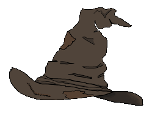

Lab 12 - Conditionals
Challenge
This lab challenged us to use condiitonals in order to show a specific output.
This output corresponds to the input the user puts into the submission box, sorting them into different houses.
Problems
I didn't really have much issues with this lab as it was pretty easy to grasp.
I think most of the difficulty was challenging myself into putting the code as jQuery a opposed to regular JavaScript.
Reflection
I had a pretty good time this lab! I understood the content and I think the context of Harry Potter made it fun.
Bonus points since I am currently watching Harry Potter with my friends since I've never seen it prior.
Results
